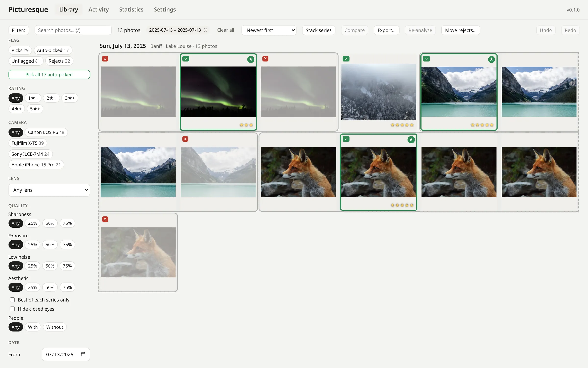
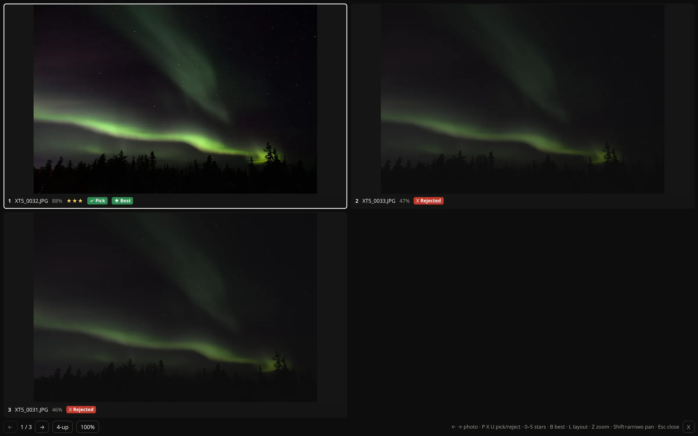
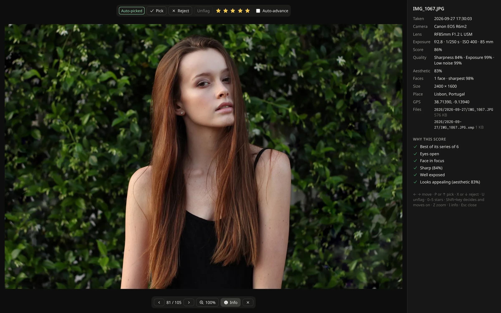
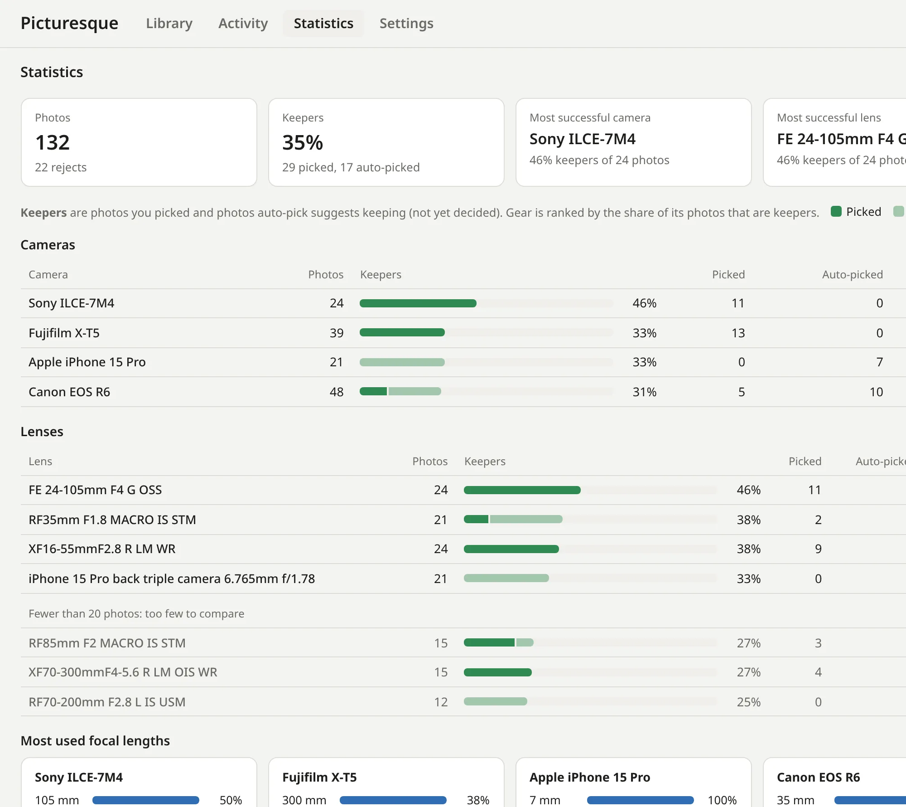

Cull a shoot in minutes. Keep every photo to yourself.
Picturesque groups your bursts, finds the sharpest frame and suggests the keepers, with AI that runs on your own computer. Free and open source: no subscription, no account, no uploads.
Linux (deb, rpm, AppImage) · Windows · macOS on Apple Silicon · GPL-3.0

Why Picturesque
The fast part of AI culling, without the strings.
Most AI culling apps are subscriptions that need an account, and some send your photos to a server. Picturesque takes a different deal: you download it, it works, and your library stays yours.
Private by design
Analysis and AI models run locally. No sign-in, no telemetry, no cloud: the only download is a model, once, when you ask for it.
Free, for good
GPL-licensed and open source. No plans, no per-shoot limits, no license check that stops working when you are offline.
Fits your workflow
Picks, rejects and ratings go into standard XMP sidecars that darktable and digiKam read (Lightroom reads the ratings). Originals are never modified.
Series and best shots
Bursts become series. The sharpest frame rises.
Photos taken moments apart that look alike are framed together as a series. Each one is scored for sharpness, exposure and noise, and the best frame gets a star. With the optional models, aesthetics and closed eyes count too.
Auto-pick then suggests a keeper from every series. One click accepts them all, and Undo takes it back.

Decide with one key
Scroll, look, press P or X.
P picks, X rejects, 1–5 rate. Hold Shift to decide and move on, or turn on auto-advance and go through a shoot with two keys.
Every score explains itself: Best of its series of 5, Sharp, Eyes closed. Zoom to 100% with Z to check focus.

Know your gear
Which camera and lens give you keepers?
Statistics rank your cameras and lenses by the share of their photos you keep, and show the focal lengths you actually use on each body.
Useful before the next trip, or the next purchase.

How it compares
Where Picturesque fits.
There are good tools for culling. They make different trade-offs, and this is the one Picturesque makes.
| Picturesque | AI culling services Aftershoot, Narrative Select, FilterPixel |
Fast photo browsers Photo Mechanic |
Open-source editors darktable, digiKam |
|
|---|---|---|---|---|
| Price | Free | Subscription; free tiers are limited | One-time license | Free |
| Account | None | Required | License key | None |
| Your photos | Never leave your computer | Analyzed on your computer or in the cloud, depending on the product | Stay local | Stay local |
| Groups bursts, picks the best frame | Yes | Yes | By hand | By hand, some grouping |
| Explains its scores | Every photo | Varies | — | — |
| Linux | deb, rpm, AppImage | Mostly Mac and Windows (FilterPixel in a browser) | Mac and Windows | Yes |
| Decisions readable by other apps | XMP sidecars | Exported to Lightroom and others | XMP | XMP |
| Source code | Open (GPL-3.0) | Closed | Closed | Open |
From the vendors' public pages, October 2026. Products change; check their sites for current details.
Also inside
Built for real libraries.
From one memory card to tens of thousands of photos.
Continuous import
Watch your card or download folders. New photos are copied into a clean, dated library as they arrive, and duplicates are skipped.
RAW, JPEG and HEIC
RAW files from Canon, Nikon, Sony, Fujifilm and many more, with RAW+JPEG pairs kept together as one photo.
Search by describing
Type “dog on a beach” and find it. The search model runs locally, with your GPU when there is one.
Closed eyes
Face analysis flags blinks, so the best-looking frame of a group portrait wins.
Compare side by side
Two or four photos at once, zoomed in sync, to settle the close calls.
Export your picks
Copy originals with their sidecars, or resized JPEGs, named by your own template.
Fast on big libraries
A virtualized timeline and indexed filters stay quick with tens of thousands of photos.
Safe by default
Originals are never changed, every decision can be undone, and rejects are only moved to a folder after you confirm.
Download
Get Picturesque 0.1
This is the first release: it is young, and your feedback shapes what comes next. Installers are not code-signed yet, so your system may ask you to confirm the first start.
Linux
.deb for Ubuntu and Debian, .rpm for
Fedora, and an .AppImage for everything else.
macOS
Apple Silicon (M1 and later): a .dmg. The first time, allow it in System Settings → Privacy & Security.
Or build it from source. Found a bug or have an idea? Open an issue.